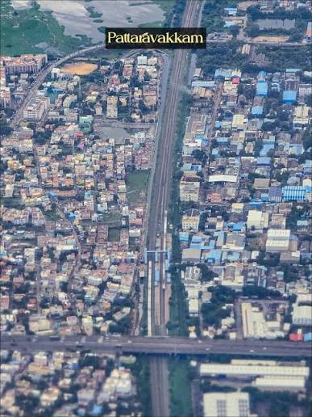
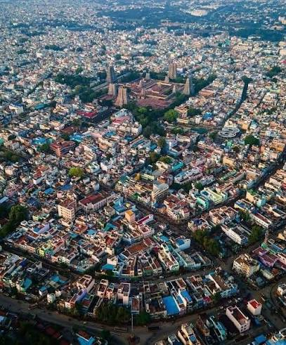
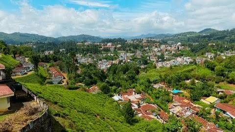
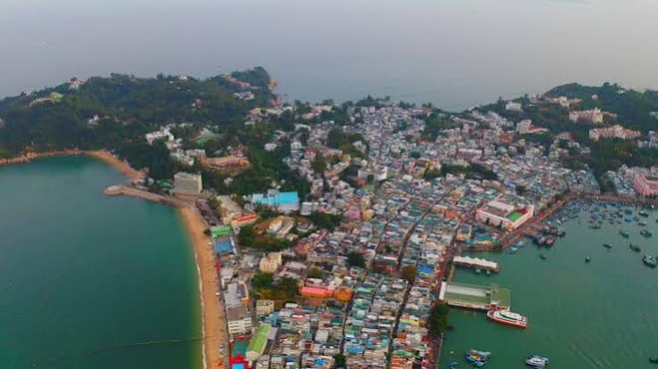
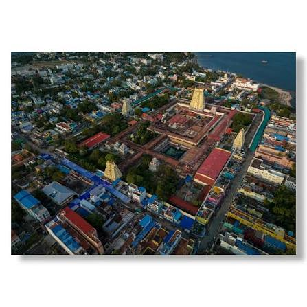
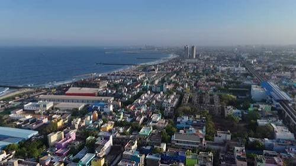

Explore Tamil Nadu through interactive maps and popular tourist routes.

Marina Beach, Kapaleeshwarar Temple, Government Museum and shopping streets.

Meenakshi Temple, Gandhi Museum, Thirumalai Nayakkar Palace.

Botanical Garden, Ooty Lake, Doddabetta Peak and Toy Train.

Vivekananda Rock Memorial, Thiruvalluvar Statue, Sunrise & Sunset viewpoints.

Ramanathaswamy Temple, Pamban Bridge, Dhanushkodi and beaches.

Shore Temple, Five Rathas, Arjuna's Penance and beach attractions.